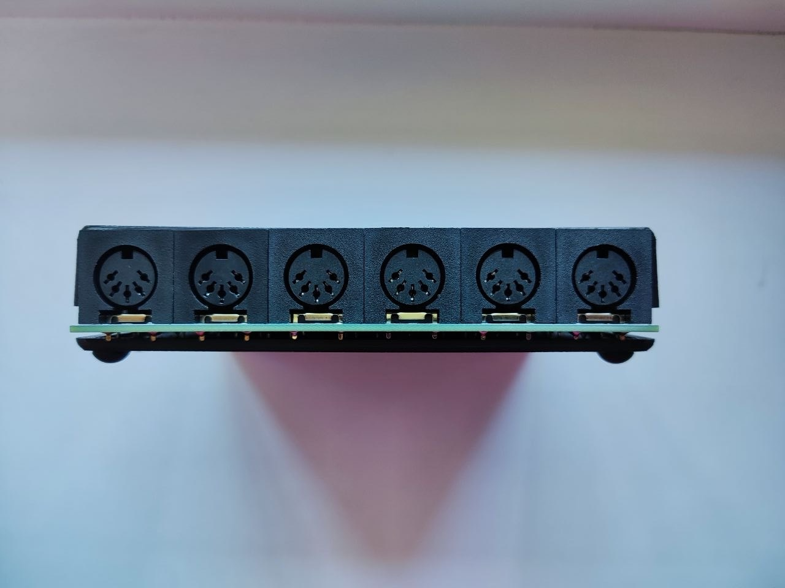
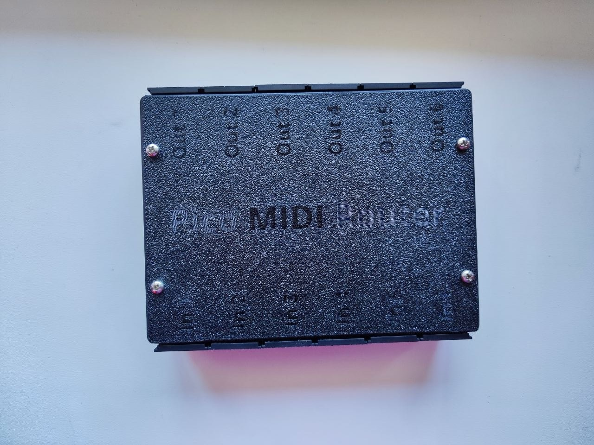

Устройство


Что это
MIDI Router принимает MIDI-сообщения с нескольких входов, декодирует их, при необходимости пропускает через специальные processors и отправляет результат на один или несколько MIDI-выходов. Основная идея — сохранить routing простым и предсказуемым, а специальные функции держать отдельно.
Архитектура и путь MIDI
Внутри Processor Engine
MIDI INPUT
│
▼
Decoder
│
▼
Processor Engine
├── MIDI Clock filter ──► discard / continue
├── MIDI CC filter ──► discard / continue
├── Keyboard Split
│ └── optional forced output/channel
└── Note Clone
└── explicit output + cloned MIDI channels
│
▼
Routing Engine
│
┌─────┼─────┐
▼ ▼ ▼
OUT 1 OUT 2 OUT ...
Приоритет
1. MIDI Decoder ↓ 2. Глобальные фильтры - MIDI Clock - MIDI CC ↓ 3. Специальные processors - Keyboard Split - Note Clone ↓ 4. Обычная Routing Matrix ↓ 5. MIDI Output
Функции
Семантика MIDI CC
Enable MIDI CC сейчас управляет всеми Control Change (0xB0) глобально. Pitch Bend (0xE0) и Aftertouch этим переключателем не управляются.
Конфигурационные файлы
| Файл | Назначение | Источник |
|---|---|---|
routing_matrix.json | Routing Matrix из Web UI. | UI / firmware |
routing_table.py | Сгенерированная таблица MIDIRT. | Генерируется из Matrix |
split_rules.json | Правила Keyboard Split. | UI / firmware |
note_clone.json | Правила Note Clone. | UI / firmware |
midi_settings.json | Глобальные MIDI Clock / CC / Note Clone settings. | UI / firmware |
USB / WebSerial protocol
Browser UI общается с firmware строковыми командами через USB Serial.
| Команда | Назначение |
|---|---|
GET | Получить Routing Matrix. |
SET <json> | Сохранить Matrix, сгенерировать routing_table.py и синхронизировать Matrix. |
GETSPLIT / SETSPLIT <json> | Получить / сохранить Split rules. |
GETNOTECLONE / SETNOTECLONE <json> | Получить / сохранить Note Clone rules. |
GETSETTINGS / SETSETTINGS <json> | Получить / сохранить MIDI Settings. |
MIDIRT | Показать текущий routing_table.py. |
Web UI
- Routing Matrix
- Keyboard Split
- Note Clone
- MIDI Settings
- Load / Save через WebSerial
- просмотр routing table и warnings
Roadmap
Ближайшие задачи
- CC filtering per input.
- Решить, нужна ли фильтрация CC по MIDI channel.
- Оценить отдельные переключатели Clock / Start / Continue / Stop.
- Улучшить diagnostics и status reporting.
- Явно показывать в UI взаимодействие Processor и Routing Matrix.
Направление CC filtering
Предпочтительное следующее расширение — фильтр на уровне Input: Input 1 → CC allowed, Input 2 → CC blocked. Per-output filtering имеет смысл только при реальной задаче использовать разные наборы CC для разных destination.
Среднесрочно
- Channel Filter
- Message Filter
- Channel Remap
- Transpose
- Velocity Curve
- Program Change Filter
- более точная Real-Time фильтрация
- SysEx filtering/support
- Presets
- Import / Export configuration
Долгосрочно
INPUT │ ▼ Decoder │ ▼ Filters │ ▼ Processors ├── Channel Filter ├── Message Filter ├── Split ├── Transpose ├── Velocity Curve ├── Channel Remap └── Note Clone │ ▼ Routing Engine │ ▼ OUTPUTS
Принципы проекта
Исходный код
Исходный код и документация находятся в репозитории проекта. Web UI публикуется через GitHub Pages.